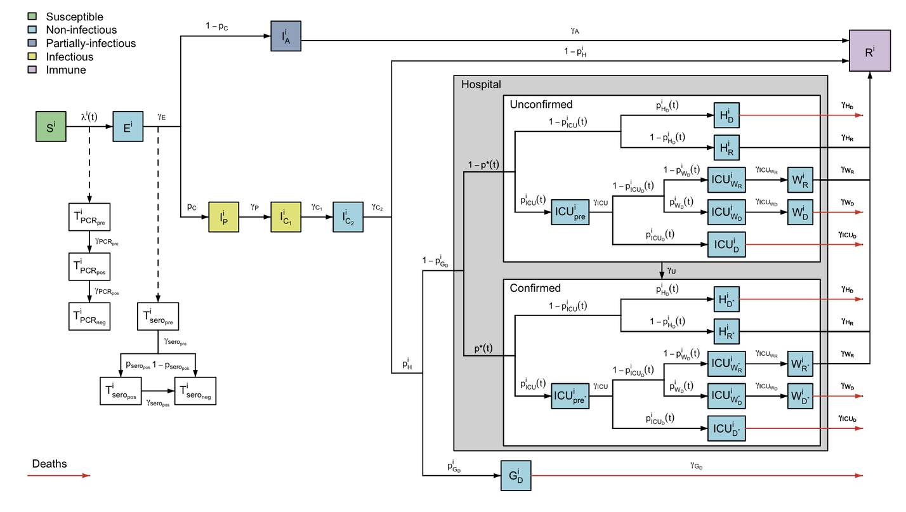

sircovid implements a series of mechanistic models to help modelling the transmission of the SARS-Cov-2 virus using stochastic compartmental models. sircovid also provides some tools to perfom Bayesian evidence synthesis from several surveillance data streams through the estimation of transmission parameters.

Important information for users
Please note that whilst this code is free to use and adapt, Imperial College London does not endorse the outputs, results, or conclusions drawn from the implementation of this model to other settings. While we encourage the use and modification of our model for research and scientific purposes please do not refer to such results as the “Imperial model” or similar unless referring to specific use in publications by Imperial College researchers.
The model is constantly in flux and we make no effort to keep things backward compatible, nor do we have the capacity to provide support (including installation support). This package is being closely developed with dust and mcstate often requiring simultaneous upgrades. The minimum version number noted in the DESCRIPTION is a good starting place - be sure that versions match or sircovid will likely not compile.
Installation
Install from the ncov drat:
drat:::add("ncov-ic")
install.packages("sircovid")or install directly from GitHub with:
remotes::install_github("mrc-ide/sircovid", upgrade = FALSE)You will need the most recent version of dust and mcstate to use the package. These will be installed automatically if you install sircovid from drat, or manually with:
drat:::add("ncov-ic")
install.packages(c("dust", "mcstate"))We use OpenMP for parallelism, and this may not be available on your system. If not then compilation will fail with an error like:
clang: error: unsupported option '-fopenmp'
make[1]: *** [basic.o] Error 1
ERROR: compilation failed for package ‘sircovid’You can either install OpenMP support, or edit your personal Makevars file to tell R that you do not have it. To do this, you can run
usethis::edit_r_makevars("user")and add the lines
after which compilation will succeed, but the model will only run on one core.
Development
In addition to the above you need to install odin and odin.dust
drat:::add("ncov-ic")
install.packages(c("odin", "odin.dust"))- Make changes to the models in
inst/odin - Run
odin.dust::odin_dust_package(here::here())from the root directory, which will generate updated filesR/dust.Randsrc/basic.cpp,src/lancelot.cpp, along withR/cpp11.Randsrc/cpp11.cpp
Alternatively, run ./scripts/generate_odin